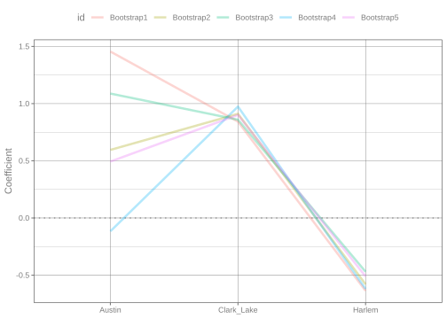
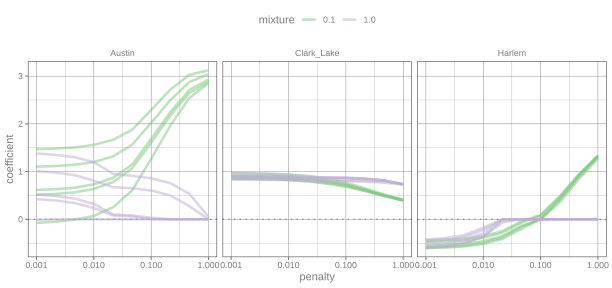

library(tidymodels)
tidymodels_prefer()
theme_set(theme_bw())
data(Chicago)
Chicago <- Chicago %>% select(ridership, Clark_Lake, Austin, Harlem)Working with model coefficients
model fitting
tidying results
regression
tuning
Create models that use coefficients, extract them from fitted models, and visualize them.
Introduction
There are many types of statistical models with diverse kinds of structure. Some models have coefficients (a.k.a. weights) for each term in the model. Familiar examples of such models are linear or logistic regression, but more complex models (e.g. neural networks, MARS) can also have model coefficients. When we work with models that use weights or coefficients, we often want to examine the estimated coefficients.
This article describes how to retrieve the estimated coefficients from models fit using tidymodels. To use code in this article, you will need to install the following packages: glmnet, Matrix, and tidymodels.
Linear regression
Let’s start with a linear regression model:
\[\hat{y} = \hat{\beta}_0 + \hat{\beta}_1x_1 + \ldots + \hat{\beta}_px_p\]
The \(\beta\) values are the coefficients and the \(x_j\) are model predictors, or features.
Let’s use the Chicago train data where we predict the ridership at the Clark and Lake station (column name: ridership) with the previous ridership data 14 days prior at three of the stations.
The data are in the modeldata package:
A single model
Let’s start by fitting only a single parsnip model object. We’ll create a model specification using linear_reg().
Note
The default engine is "lm" so no call to set_engine() is required.
The fit() function estimates the model coefficients, given a formula and data set.
lm_spec <- linear_reg()
lm_fit <- fit(lm_spec, ridership ~ ., data = Chicago)
lm_fit
#> parsnip model object
#>
#>
#> Call:
#> stats::lm(formula = ridership ~ ., data = data)
#>
#> Coefficients:
#> (Intercept) Clark_Lake Austin Harlem
#> 1.6778 0.9035 0.6123 -0.5550The best way to retrieve the fitted parameters is to use the tidy() method. This function, in the broom package, returns the coefficients and their associated statistics in a data frame with standardized column names:
tidy(lm_fit)
#> # A tibble: 4 × 5
#> term estimate std.error statistic p.value
#> <chr> <dbl> <dbl> <dbl> <dbl>
#> 1 (Intercept) 1.68 0.156 10.7 1.11e- 26
#> 2 Clark_Lake 0.904 0.0280 32.3 5.14e-210
#> 3 Austin 0.612 0.320 1.91 5.59e- 2
#> 4 Harlem -0.555 0.165 -3.36 7.85e- 4We’ll use this function in subsequent sections.
Resampled or tuned models
The tidymodels framework emphasizes the use of resampling methods to evaluate and characterize how well a model works. While time series resampling methods are appropriate for these data, we can also use the bootstrap to resample the data. This is a standard resampling approach when evaluating the uncertainty in statistical estimates.
We’ll use five bootstrap resamples of the data to simplify the plots and output (normally, we would use a larger number of resamples for more reliable estimates).
set.seed(123)
bt <- bootstraps(Chicago, times = 5)With resampling, we fit the same model to the different simulated versions of the data set produced by resampling. The tidymodels function fit_resamples() is the recommended approach for doing so.
Warning
The fit_resamples() function does not automatically save the model objects for each resample since these can be quite large and its main purpose is estimating performance. However, we can pass a function to fit_resamples() that can save the model object or any other aspect of the fit.
This function takes a single argument that represents the fitted workflow object (even if you don’t give fit_resamples() a workflow).
From this, we can extract the model fit. There are two “levels” of model objects that are available:
The parsnip model object, which wraps the underlying model object. We retrieve this using the
extract_fit_parsnip()function.The underlying model object (a.k.a. the engine fit) via the
extract_fit_engine().
We’ll use the latter option and then tidy this model object as we did in the previous section. Let’s add this to the control function so that we can re-use it.
get_lm_coefs <- function(x) {
x %>%
# get the lm model object
extract_fit_engine() %>%
# transform its format
tidy()
}
tidy_ctrl <- control_grid(extract = get_lm_coefs)This argument is then passed to fit_resamples():
lm_res <-
lm_spec %>%
fit_resamples(ridership ~ ., resamples = bt, control = tidy_ctrl)
lm_res
#> # Resampling results
#> # Bootstrap sampling
#> # A tibble: 5 × 5
#> splits id .metrics .notes .extracts
#> <list> <chr> <list> <list> <list>
#> 1 <split [5698/2076]> Bootstrap1 <tibble [2 × 4]> <tibble [0 × 4]> <tibble>
#> 2 <split [5698/2098]> Bootstrap2 <tibble [2 × 4]> <tibble [0 × 4]> <tibble>
#> 3 <split [5698/2064]> Bootstrap3 <tibble [2 × 4]> <tibble [0 × 4]> <tibble>
#> 4 <split [5698/2082]> Bootstrap4 <tibble [2 × 4]> <tibble [0 × 4]> <tibble>
#> 5 <split [5698/2088]> Bootstrap5 <tibble [2 × 4]> <tibble [0 × 4]> <tibble>Note that there is a .extracts column in our resampling results. This object contains the output of our get_lm_coefs() function for each resample. The structure of the elements of this column is a little complex. Let’s start by looking at the first element (which corresponds to the first resample):
lm_res$.extracts[[1]]
#> # A tibble: 1 × 2
#> .extracts .config
#> <list> <chr>
#> 1 <tibble [4 × 5]> pre0_mod0_post0There is another column in this element called .extracts that has the results of the tidy() function call:
lm_res$.extracts[[1]]$.extracts[[1]]
#> # A tibble: 4 × 5
#> term estimate std.error statistic p.value
#> <chr> <dbl> <dbl> <dbl> <dbl>
#> 1 (Intercept) 1.40 0.157 8.90 7.23e- 19
#> 2 Clark_Lake 0.842 0.0280 30.1 2.39e-184
#> 3 Austin 1.46 0.320 4.54 5.70e- 6
#> 4 Harlem -0.637 0.163 -3.92 9.01e- 5These nested columns can be flattened via the purrr unnest() function:
lm_res %>%
select(id, .extracts) %>%
unnest(.extracts)
#> # A tibble: 5 × 3
#> id .extracts .config
#> <chr> <list> <chr>
#> 1 Bootstrap1 <tibble [4 × 5]> pre0_mod0_post0
#> 2 Bootstrap2 <tibble [4 × 5]> pre0_mod0_post0
#> 3 Bootstrap3 <tibble [4 × 5]> pre0_mod0_post0
#> 4 Bootstrap4 <tibble [4 × 5]> pre0_mod0_post0
#> 5 Bootstrap5 <tibble [4 × 5]> pre0_mod0_post0We still have a column of nested tibbles, so we can run the same command again to get the data into a more useful format:
lm_coefs <-
lm_res %>%
select(id, .extracts) %>%
unnest(.extracts) %>%
unnest(.extracts)
lm_coefs %>% select(id, term, estimate, p.value)
#> # A tibble: 20 × 4
#> id term estimate p.value
#> <chr> <chr> <dbl> <dbl>
#> 1 Bootstrap1 (Intercept) 1.40 7.23e- 19
#> 2 Bootstrap1 Clark_Lake 0.842 2.39e-184
#> 3 Bootstrap1 Austin 1.46 5.70e- 6
#> 4 Bootstrap1 Harlem -0.637 9.01e- 5
#> 5 Bootstrap2 (Intercept) 1.69 2.87e- 28
#> 6 Bootstrap2 Clark_Lake 0.911 1.06e-219
#> 7 Bootstrap2 Austin 0.595 5.93e- 2
#> 8 Bootstrap2 Harlem -0.580 3.88e- 4
#> 9 Bootstrap3 (Intercept) 1.27 3.43e- 16
#> 10 Bootstrap3 Clark_Lake 0.859 5.03e-194
#> 11 Bootstrap3 Austin 1.09 6.77e- 4
#> 12 Bootstrap3 Harlem -0.470 4.34e- 3
#> 13 Bootstrap4 (Intercept) 1.95 2.91e- 34
#> 14 Bootstrap4 Clark_Lake 0.974 1.47e-233
#> 15 Bootstrap4 Austin -0.116 7.21e- 1
#> 16 Bootstrap4 Harlem -0.620 2.11e- 4
#> 17 Bootstrap5 (Intercept) 1.87 1.98e- 33
#> 18 Bootstrap5 Clark_Lake 0.901 1.16e-210
#> 19 Bootstrap5 Austin 0.494 1.15e- 1
#> 20 Bootstrap5 Harlem -0.512 1.73e- 3That’s better! Now, let’s plot the model coefficients for each resample:

There seems to be a lot of uncertainty in the coefficient for the Austin station data, but less for the other two.
Looking at the code for unnesting the results, you may find the double-nesting structure excessive or cumbersome. However, the extraction functionality is flexible, and a simpler structure would prevent many use cases.
More complex: a glmnet model
The glmnet model can fit the same linear regression model structure shown above. It uses regularization (a.k.a penalization) to estimate the model parameters. This has the benefit of shrinking the coefficients towards zero, important in situations where there are strong correlations between predictors or if some feature selection is required. Both of these cases are true for our Chicago train data set.
There are two types of penalization that this model uses:
Lasso (a.k.a. \(L_1\)) penalties can shrink the model terms so much that they are absolute zero (i.e. their effect is entirely removed from the model).
Weight decay (a.k.a ridge regression or \(L_2\)) uses a different type of penalty that is most useful for highly correlated predictors.
The glmnet model has two primary tuning parameters, the total amount of penalization and the mixture of the two penalty types. For example, this specification:
glmnet_spec <-
linear_reg(penalty = 0.1, mixture = 0.95) %>%
set_engine("glmnet")has a penalty that is 95% lasso and 5% weight decay. The total amount of these two penalties is 0.1 (which is fairly high).
Note
Models with regularization require that predictors are all on the same scale. The ridership at our three stations are very different, but glmnet automatically centers and scales the data. You can use recipes to center and scale your data yourself.
Let’s combine the model specification with a formula in a model workflow() and then fit the model to the data:
glmnet_wflow <-
workflow() %>%
add_model(glmnet_spec) %>%
add_formula(ridership ~ .)
glmnet_fit <- fit(glmnet_wflow, Chicago)
glmnet_fit
#> ══ Workflow [trained] ════════════════════════════════════════════════
#> Preprocessor: Formula
#> Model: linear_reg()
#>
#> ── Preprocessor ──────────────────────────────────────────────────────
#> ridership ~ .
#>
#> ── Model ─────────────────────────────────────────────────────────────
#>
#> Call: glmnet::glmnet(x = maybe_matrix(x), y = y, family = "gaussian", alpha = ~0.95)
#>
#> Df %Dev Lambda
#> 1 0 0.00 6.1040
#> 2 1 12.75 5.5620
#> 3 1 23.45 5.0680
#> 4 1 32.43 4.6180
#> 5 1 39.95 4.2070
#> 6 1 46.25 3.8340
#> 7 1 51.53 3.4930
#> 8 1 55.94 3.1830
#> 9 1 59.62 2.9000
#> 10 1 62.70 2.6420
#> 11 2 65.28 2.4080
#> 12 2 67.44 2.1940
#> 13 2 69.23 1.9990
#> 14 2 70.72 1.8210
#> 15 2 71.96 1.6600
#> 16 2 73.00 1.5120
#> 17 2 73.86 1.3780
#> 18 2 74.57 1.2550
#> 19 2 75.17 1.1440
#> 20 2 75.66 1.0420
#> 21 2 76.07 0.9496
#> 22 2 76.42 0.8653
#> 23 2 76.70 0.7884
#> 24 2 76.94 0.7184
#> 25 2 77.13 0.6545
#> 26 2 77.30 0.5964
#> 27 2 77.43 0.5434
#> 28 2 77.55 0.4951
#> 29 2 77.64 0.4512
#> 30 2 77.72 0.4111
#> 31 2 77.78 0.3746
#> 32 2 77.84 0.3413
#> 33 2 77.88 0.3110
#> 34 2 77.92 0.2833
#> 35 2 77.95 0.2582
#> 36 2 77.98 0.2352
#> 37 2 78.00 0.2143
#> 38 2 78.01 0.1953
#> 39 2 78.03 0.1779
#> 40 2 78.04 0.1621
#> 41 2 78.05 0.1477
#> 42 2 78.06 0.1346
#> 43 2 78.07 0.1226
#> 44 2 78.07 0.1118
#> 45 2 78.08 0.1018
#> 46 2 78.08 0.0928
#>
#> ...
#> and 9 more lines.In this output, the term lambda is used to represent the penalty.
Note that the output shows many values of the penalty despite our specification of penalty = 0.1. It turns out that this model fits a “path” of penalty values. Even though we are interested in a value of 0.1, we can get the model coefficients for many associated values of the penalty from the same model object.
Let’s look at two different approaches to obtaining the coefficients. Both will use the tidy() method. One will tidy a glmnet object and the other will tidy a tidymodels object.
Using glmnet penalty values
This glmnet fit contains multiple penalty values which depend on the data set; changing the data (or the mixture amount) often produces a different set of values. For this data set, there are 55 penalties available. To get the set of penalties produced for this data set, we can extract the engine fit and tidy:
glmnet_fit %>%
extract_fit_engine() %>%
tidy() %>%
rename(penalty = lambda) %>% # <- for consistent naming
filter(term != "(Intercept)")
#> # A tibble: 99 × 5
#> term step estimate penalty dev.ratio
#> <chr> <dbl> <dbl> <dbl> <dbl>
#> 1 Clark_Lake 2 0.0753 5.56 0.127
#> 2 Clark_Lake 3 0.145 5.07 0.234
#> 3 Clark_Lake 4 0.208 4.62 0.324
#> 4 Clark_Lake 5 0.266 4.21 0.400
#> 5 Clark_Lake 6 0.319 3.83 0.463
#> 6 Clark_Lake 7 0.368 3.49 0.515
#> 7 Clark_Lake 8 0.413 3.18 0.559
#> 8 Clark_Lake 9 0.454 2.90 0.596
#> 9 Clark_Lake 10 0.491 2.64 0.627
#> 10 Clark_Lake 11 0.526 2.41 0.653
#> # ℹ 89 more rowsThis works well but, it turns out that our penalty value (0.1) is not in the list produced by the model! The underlying package has functions that use interpolation to produce coefficients for this specific value, but the tidy() method for glmnet objects does not use it.
Using specific penalty values
If we run the tidy() method on the workflow or parsnip object, a different function is used that returns the coefficients for the penalty value that we specified:
tidy(glmnet_fit)
#> # A tibble: 4 × 3
#> term estimate penalty
#> <chr> <dbl> <dbl>
#> 1 (Intercept) 1.69 0.1
#> 2 Clark_Lake 0.846 0.1
#> 3 Austin 0.271 0.1
#> 4 Harlem 0 0.1For any another (single) penalty, we can use an additional argument:
tidy(glmnet_fit, penalty = 5.5620) # A value from above
#> # A tibble: 4 × 3
#> term estimate penalty
#> <chr> <dbl> <dbl>
#> 1 (Intercept) 12.6 5.56
#> 2 Clark_Lake 0.0753 5.56
#> 3 Austin 0 5.56
#> 4 Harlem 0 5.56The reason for having two tidy() methods is that, with tidymodels, the focus is on using a specific penalty value.
Tuning a glmnet model
If we know a priori acceptable values for penalty and mixture, we can use the fit_resamples() function as we did before with linear regression. Otherwise, we can tune those parameters with the tidymodels tune_*() functions.
Let’s tune our glmnet model over both parameters with this grid:
Here is where more glmnet-related complexity comes in: we know that each resample and each value of mixture will probably produce a different set of penalty values contained in the model object. How can we look at the coefficients at the specific penalty values that we are using to tune?
The approach that we suggest is to use the special path_values option for glmnet. Details are described in the technical documentation about glmnet and tidymodels but in short, this parameter will assign the collection of penalty values used by each glmnet fit (regardless of the data or value of mixture).
We can pass these as an engine argument and then update our previous workflow object:
glmnet_tune_spec <-
linear_reg(penalty = tune(), mixture = tune()) %>%
set_engine("glmnet", path_values = pen_vals)
glmnet_wflow <-
glmnet_wflow %>%
update_model(glmnet_tune_spec)Now we will use an extraction function similar to when we used ordinary least squares. We add an additional argument to retain coefficients that are shrunk to zero by the lasso penalty:
get_glmnet_coefs <- function(x) {
x %>%
extract_fit_engine() %>%
tidy(return_zeros = TRUE) %>%
rename(penalty = lambda)
}
parsnip_ctrl <- control_grid(extract = get_glmnet_coefs)
glmnet_res <-
glmnet_wflow %>%
tune_grid(
resamples = bt,
grid = grid,
control = parsnip_ctrl
)
glmnet_res
#> # Tuning results
#> # Bootstrap sampling
#> # A tibble: 5 × 5
#> splits id .metrics .notes .extracts
#> <list> <chr> <list> <list> <list>
#> 1 <split [5698/2076]> Bootstrap1 <tibble [40 × 6]> <tibble [0 × 4]> <tibble>
#> 2 <split [5698/2098]> Bootstrap2 <tibble [40 × 6]> <tibble [0 × 4]> <tibble>
#> 3 <split [5698/2064]> Bootstrap3 <tibble [40 × 6]> <tibble [0 × 4]> <tibble>
#> 4 <split [5698/2082]> Bootstrap4 <tibble [40 × 6]> <tibble [0 × 4]> <tibble>
#> 5 <split [5698/2088]> Bootstrap5 <tibble [40 × 6]> <tibble [0 × 4]> <tibble>As noted before, the elements of the main .extracts column have an embedded list column with the results of get_glmnet_coefs():
glmnet_res$.extracts[[1]] %>% head()
#> # A tibble: 6 × 4
#> penalty mixture .extracts .config
#> <dbl> <dbl> <list> <chr>
#> 1 0.001 0.1 <tibble [40 × 5]> pre0_mod01_post0
#> 2 0.001 1 <tibble [40 × 5]> pre0_mod02_post0
#> 3 0.00215 0.1 <tibble [40 × 5]> pre0_mod03_post0
#> 4 0.00215 1 <tibble [40 × 5]> pre0_mod04_post0
#> 5 0.00464 0.1 <tibble [40 × 5]> pre0_mod05_post0
#> 6 0.00464 1 <tibble [40 × 5]> pre0_mod06_post0
glmnet_res$.extracts[[1]]$.extracts[[1]] %>% head()
#> # A tibble: 6 × 5
#> term step estimate penalty dev.ratio
#> <chr> <dbl> <dbl> <dbl> <dbl>
#> 1 (Intercept) 1 0.568 1 0.769
#> 2 (Intercept) 2 0.432 0.464 0.775
#> 3 (Intercept) 3 0.607 0.215 0.779
#> 4 (Intercept) 4 0.846 0.1 0.781
#> 5 (Intercept) 5 1.06 0.0464 0.782
#> 6 (Intercept) 6 1.22 0.0215 0.783As before, we’ll have to use a double unnest(). Since the penalty value is in both the top-level and lower-level .extracts, we’ll use select() to get rid of the first version (but keep mixture):
But wait! We know that each glmnet fit contains all of the coefficients. This means, for a specific resample and value of mixture, the results are the same:
all.equal(
# First bootstrap, first `mixture`, first `penalty`
glmnet_res$.extracts[[1]]$.extracts[[1]],
# First bootstrap, first `mixture`, second `penalty`
glmnet_res$.extracts[[1]]$.extracts[[2]]
)
#> [1] "Component \"estimate\": Mean relative difference: 0.530535"
#> [2] "Component \"dev.ratio\": Mean relative difference: 0.001948995"For this reason, we’ll add a slice(1) when grouping by id and mixture. This will get rid of the replicated results.
glmnet_coefs <-
glmnet_res %>%
select(id, .extracts) %>%
unnest(.extracts) %>%
select(id, mixture, .extracts) %>%
group_by(id, mixture) %>% # ┐
slice(1) %>% # │ Remove the redundant results
ungroup() %>% # ┘
unnest(.extracts)
glmnet_coefs %>%
select(id, penalty, mixture, term, estimate) %>%
filter(term != "(Intercept)")
#> # A tibble: 300 × 5
#> id penalty mixture term estimate
#> <chr> <dbl> <dbl> <chr> <dbl>
#> 1 Bootstrap1 1 0.1 Clark_Lake 0.391
#> 2 Bootstrap1 0.464 0.1 Clark_Lake 0.485
#> 3 Bootstrap1 0.215 0.1 Clark_Lake 0.590
#> 4 Bootstrap1 0.1 0.1 Clark_Lake 0.680
#> 5 Bootstrap1 0.0464 0.1 Clark_Lake 0.746
#> 6 Bootstrap1 0.0215 0.1 Clark_Lake 0.793
#> 7 Bootstrap1 0.01 0.1 Clark_Lake 0.817
#> 8 Bootstrap1 0.00464 0.1 Clark_Lake 0.828
#> 9 Bootstrap1 0.00215 0.1 Clark_Lake 0.834
#> 10 Bootstrap1 0.001 0.1 Clark_Lake 0.837
#> # ℹ 290 more rowsNow we have the coefficients. Let’s look at how they behave as more regularization is used:
glmnet_coefs %>%
filter(term != "(Intercept)") %>%
mutate(mixture = format(mixture)) %>%
ggplot(aes(x = penalty, y = estimate, col = mixture, groups = id)) +
geom_hline(yintercept = 0, lty = 3) +
geom_line(alpha = 0.5, lwd = 1.2) +
facet_wrap(~ term) +
scale_x_log10() +
scale_color_brewer(palette = "Accent") +
labs(y = "coefficient") +
theme(legend.position = "top")
Notice a couple of things:
With a pure lasso model (i.e.,
mixture = 1), the Austin station predictor is selected out in each resample. With a mixture of both penalties, its influence increases. Also, as the penalty increases, the uncertainty in this coefficient decreases.The Harlem predictor is either quickly selected out of the model or goes from negative to positive.
Session information
#> ─ Session info ─────────────────────────────────────────────────────
#> version R version 4.6.0 (2026-04-24)
#> language (EN)
#> date 2026-05-04
#> pandoc 3.1.3
#> quarto 1.9.37
#>
#> ─ Packages ─────────────────────────────────────────────────────────
#> package version date (UTC)
#> broom 1.0.12 2026-01-27
#> dials 1.4.3 2026-04-11
#> dplyr 1.2.1 2026-04-03
#> ggplot2 4.0.3 2026-04-22
#> glmnet 5.0 2026-05-04
#> infer 1.1.0 2025-12-18
#> Matrix 1.7-5 2026-03-21
#> parsnip 1.5.0 2026-04-09
#> purrr 1.2.2 2026-04-10
#> recipes 1.3.2 2026-04-02
#> rlang 1.2.0 2026-04-06
#> rsample 1.3.2 2026-01-30
#> tibble 3.3.1 2026-01-11
#> tidymodels 1.5.0 2026-04-23
#> tune 2.1.0 2026-04-17
#> workflows 1.3.0 2025-08-27
#> yardstick 1.4.0 2026-04-07
#>
#> ────────────────────────────────────────────────────────────────────